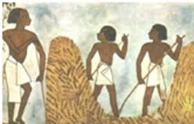
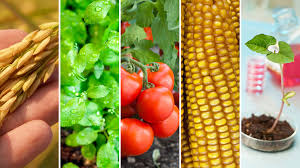
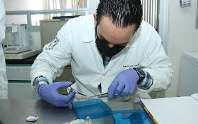
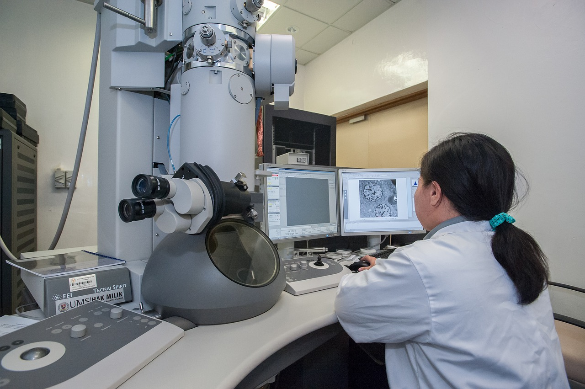
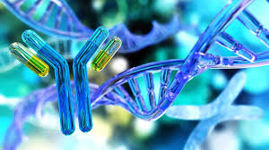

La historia de la biotecnología es una narrativa que abarca miles de años, desde la utilización temprana de procesos biológicos en la fermentación hasta las sofisticadas técnicas de ingeniería genética y biología molecular de hoy. Esta historia puede dividirse en varios periodos clave que destacan los avances y descubrimientos más significativos en el campo.
Primeros Usos de Procesos Biológicos
Antigüedad:
Los primeros usos de la biotecnología se remontan a la antigüedad, cuando las civilizaciones comenzaron a emplear procesos biológicos para producir alimentos y bebidas. Los sumerios y los egipcios, por ejemplo, utilizaban la fermentación para elaborar cerveza y pan hace más de 6,000 años. La fermentación es un proceso biotecnológico natural donde los microorganismos, como las levaduras, convierten los azúcares en alcohol y dióxido de carbono.

Edad Media:
Durante la Edad Media, los métodos de fermentación y cultivo de plantas continuaron evolucionando. Los monjes en Europa perfeccionaron la elaboración de cerveza y vino, mientras que en Asia se desarrollaron técnicas avanzadas para producir alimentos fermentados como el miso y el sake.
Revolución Científica y Biología Moderna
Siglo XVII y XVIII:
La invención del microscopio en el siglo XVII por Anton van Leeuwenhoek permitió la observación de microorganismos por primera vez, sentando las bases para la microbiología. Este fue un paso crucial en la comprensión de los procesos biológicos a nivel microscópico.

Siglo XIX:
El siglo XIX trajo consigo importantes descubrimientos que transformaron la biotecnología. Louis Pasteur demostró el papel de los microorganismos en la fermentación y la enfermedad, desarrollando métodos para pasteurizar alimentos y crear vacunas. Gregor Mendel, con sus experimentos con plantas de guisante, estableció las leyes de la herencia genética, sentando las bases para la genética moderna.
Era de la Biotecnología Moderna
Años 1950 y 1960:
La biotecnología moderna comenzó a tomar forma con el descubrimiento de la estructura del ADN por James Watson y Francis Crick en 1953. Este hallazgo revolucionó la biología y abrió el camino para la manipulación genética. En los años 1960, se desarrollaron técnicas de cultivo de tejidos y células, permitiendo estudiar y modificar células en un entorno controlado.
Años 1970:
La década de 1970 marcó el inicio de la ingeniería genética con la creación del ADN recombinante. Herbert Boyer y Stanley Cohen fueron pioneros en esta técnica, que permite insertar genes de un organismo en otro. Este avance condujo al desarrollo de la primera proteína humana producida por bacterias: la insulina recombinante, aprobada para uso médico en 1982.
Aplicaciones Industriales y Expansión
Años 1980 y 1990:
La biotecnología comenzó a expandirse rápidamente en los años 1980 y 1990. Se desarrollaron cultivos genéticamente modificados (OGM), como el maíz Bt y la soja resistente a herbicidas, que ofrecían ventajas en términos de rendimiento y resistencia a plagas. En medicina, la producción de hormonas humanas, como la insulina y la hormona del crecimiento, y la creación de nuevas vacunas se hicieron posibles gracias a la biotecnología.

Proyectos Genoma Humano
En los años 1990, el Proyecto Genoma Humano se embarcó en la ambiciosa tarea de secuenciar todo el ADN humano. Completado en 2003, este proyecto proporcionó una comprensión detallada de la estructura genética humana y abrió nuevas vías para la investigación genética y médica.
Siglo XXI y Avances Recientes
Edición Genética y CRISPR:
El siglo XXI ha sido testigo de avances aún más significativos en biotecnología. La técnica CRISPR-Cas9, desarrollada en la década de 2010, permite editar genes con una precisión sin precedentes. Esto ha revolucionado la investigación genética y tiene potenciales aplicaciones en la corrección de enfermedades genéticas, la mejora de cultivos y la creación de organismos modificados con características deseables.

Biología Sintética:
La biología sintética es otra área emergente que combina principios de ingeniería y biología para diseñar y construir nuevos sistemas biológicos. Esto incluye la creación de organismos sintéticos y la producción de compuestos químicos a partir de sistemas biológicos modificados.

Biotecnología Médica:
En medicina, la biotecnología continúa avanzando con el desarrollo de terapias génicas, inmunoterapias contra el cáncer, y la producción de anticuerpos monoclonales para tratar diversas enfermedades. La pandemia de COVID-19 ha acelerado la innovación biotecnológica, con la rápida creación y despliegue de vacunas basadas en ARN mensajero (ARNm).
Futuro de la Biotecnología
El futuro de la biotecnología es prometedor, con investigaciones en curso que podrían transformar muchas áreas de la vida. Los avances en edición genética, biología sintética y biotecnología ambiental tienen el potencial de resolver algunos de los mayores desafíos de la humanidad, como el cambio climático, la seguridad alimentaria y las enfermedades incurables.
En resumen, la historia de la biotecnología es una crónica de innovación y descubrimiento que ha evolucionado desde las prácticas ancestrales de fermentación hasta las sofisticadas tecnologías de manipulación genética y biología sintética de hoy. Esta evolución ha transformado la agricultura, la medicina y muchas otras áreas, y continuará siendo un campo crucial para el desarrollo humano en el futuro.